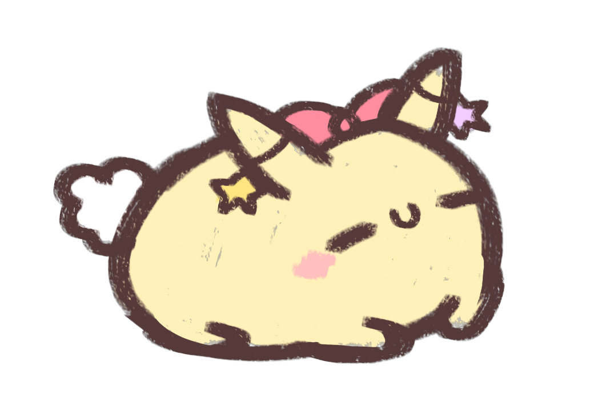

咪咕保育協會是什麼？

從2021年起，大量咪咕抵達地球並四散各處，咪咕們主動向人類請求庇護，因此一群人類決定擔起照護咪咕的責任、並成立「咪咕保育協會」以方便管理、接收、送養每隻流浪咪咕。
若您在外發現迷失的咪咕，請立刻將咪咕送到協會、或至咪咕保育協會官網的「聯絡我們」頁面與我們聯絡，協會會給予咪咕適當的安置與照顧。
若您在外發現迷失的咪咕，請立刻將咪咕送到協會、或至咪咕保育協會官網的「聯絡我們」頁面與我們聯絡，協會會給予咪咕適當的安置與照顧。
FAQ
- 咪咕保育協會有分會嗎？ 是的。除了咪咕保育協會臺灣總會以外，我們在全世界都有分會。
- 協會中的「分區管理」是什麼意思？ 由於四散各處的咪咕不只有原生種、也有少許異變種在地球出沒，為了咪咕們的安全，我們會將原生種與異變種分區管理，請不用擔心。
- 咪咕們抵達地球的原因為何？ 很遺憾的，目前無人知曉為何咪咕們會來到地球，協會相關人員只要向咪咕詢問相關問題，咪咕不是閉口不談就是用了過難的咪咕語導致翻譯員無法翻譯，若有進一步消息，我們會立刻更新官網資訊以供參考。
- 咪咕星球離地球那麼遠，咪咕星球的相關資料與照片是從哪裡找到的呢？ 大多數資料為咪咕們口述或繪製而成，有極少數的咪咕仍有往返咪咕星球的能力，因此我們託付他們拍攝地形環境照片與採集樣本的任務，這才讓我們對於咪咕星球有了更詳細的瞭解。
- 聽說有咪咕盜獵協會，那是什麼？ 咪咕盜獵協會為與本協會理念嚴重抵觸的組織，該協會成員部分認為咪咕們來到地球的動機不純良，致力於將咪咕趕盡殺絕或驅逐地球，也有不少成員認為咪咕是肉質鮮美的上等食材，因此惡意捕獵流浪咪咕。
有些咪咕盜獵協會成員甚至會刻意養殖異變種並指派他們獵殺原生種，我們強力反對此種殘忍行為。